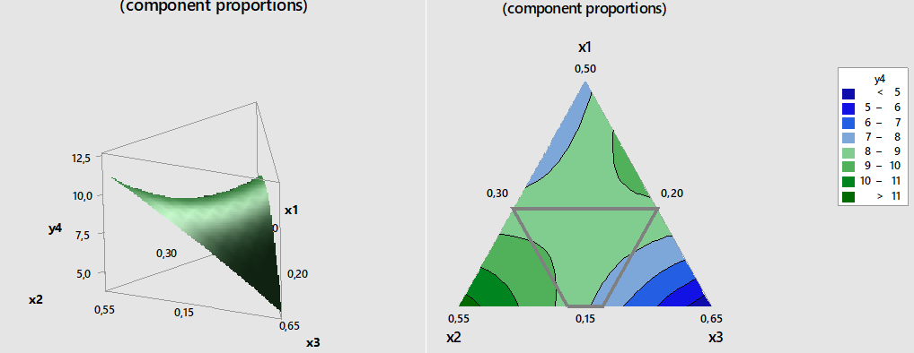
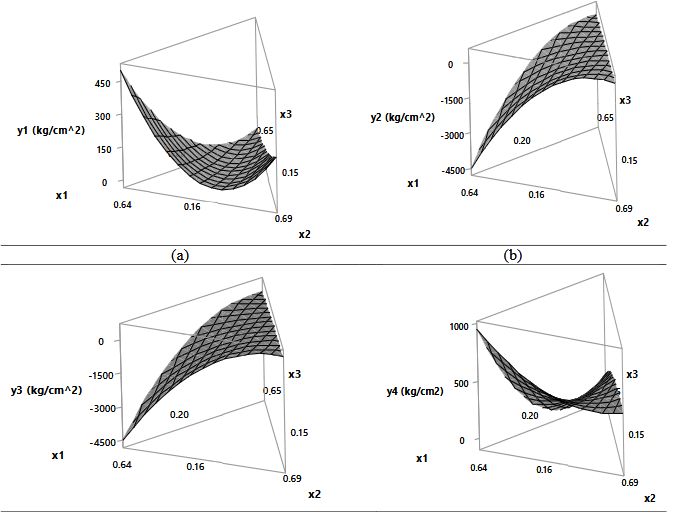

Servicios que Ofrecemos
Ofrecemos servicios especializados en el análisis y diseño experimental de mezclas para optimizar formulaciones en diversas industrias.
Utilizamos metodologías avanzadas y herramientas estadísticas para garantizar resultados precisos, reducción de costos y mejora en la calidad de tus productos.
- Diseño de Experimentos con mezclas:Utilizamos técnicas de Diseño de Experimentos para evaluar múltiples variables y sus interacciones, permitiéndote encontrar la combinación óptima de ingredientes o componentes.
- Análisis Estadístico:Realizamos análisis estadísticos avanzados para interpretar los datos y garantizar que las mezclas cumplan con los estándares de calidad y eficiencia.
- Interpretación:Ganaras nuevos aprendizajes que sobre el proceso se lograron, verificar supuestos y elegir el tratamiento ganador, siempre con apoyo de las pruebas estadísticas
- Optimización de Procesos:Te ayudamos a reducir costos y mejorar la eficiencia de tus procesos mediante la identificación de las proporciones ideales de cada componente
- Validación de Resultados:Validamos los resultados mediante pruebas prácticas para asegurar que las mezclas funcionen en condiciones reales

